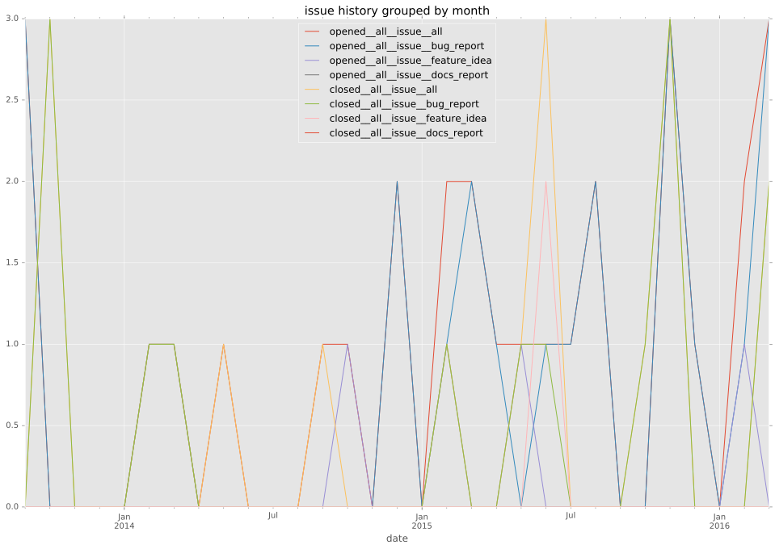
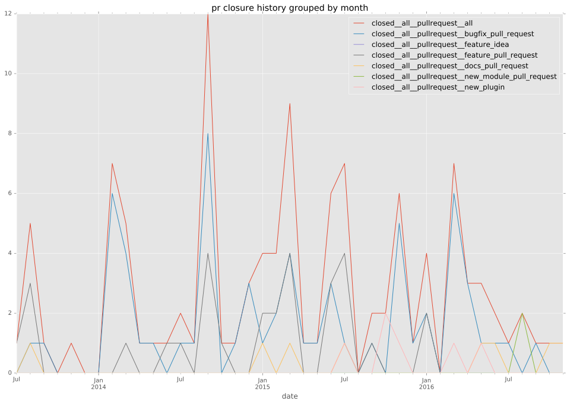

authors
- bpennypacker
maintainers
- bpennypacker
contributors
- bpennypacker : 43 commits
- jcassee : 26 commits
- zimbatm : 17 commits
- jimbydamonk : 10 commits
- cinek810 : 10 commits
- Pallokala : 10 commits
- Coderah : 9 commits
- mpdehaan : 8 commits
- bcoca : 8 commits
- joelthompson : 6 commits
- scottanderson42 : 5 commits
- semifocused : 4 commits
- mansunkuo : 4 commits
- gundalow : 4 commits
- Hypermanzer : 4 commits
- steenzout : 3 commits
- spatten : 3 commits
- ashwanthkumar : 3 commits
- smiller171 : 2 commits
- napkindrawing : 2 commits
- manicminer : 2 commits
- jimi-c : 2 commits
- jctanner : 2 commits
- arcz : 2 commits
- gigaroby : 1 commits
- alexclifford : 1 commits
- aioue : 1 commits
- abadger : 1 commits
total issue counts
unknown: 1
feature pull request: 28
pullrequest: 102
docs pull request: 6
bugfix pull request: 58
feature idea: 5
issue: 29
new plugin: 6
bug report: 27
issue history

pullrequest history

days open by issue type
bugfix pull request
count: 85
std: 42.2921776611
min: 0
max: 159
median: 0.0
mean: 20.3294117647
all
count: 168
std: 77.3958308172
min: 0
max: 532
median: 3.0
mean: 42.4285714286
pullrequest
count: 0
std: nan
min: nan
max: nan
median: nan
mean: nan
docs pull request
count: 11
std: 1.73205080757
min: 0
max: 4
median: 0.0
mean: 1.0
feature pull request
count: 39
std: 66.6799818012
min: 0
max: 263
median: 49.0
mean: 61.1282051282
feature idea
count: 2
std: 79.9030662741
min: 132
max: 245
median: 188.5
mean: 188.5
issue
count: 0
std: nan
min: nan
max: nan
median: nan
mean: nan
new plugin
count: 6
std: 47.4959647409
min: 15
max: 128
median: 47.5
mean: 63.6666666667
bug report
count: 24
std: 144.379005058
min: 0
max: 532
median: 16.5
mean: 93.5833333333
closures grouped by total days open